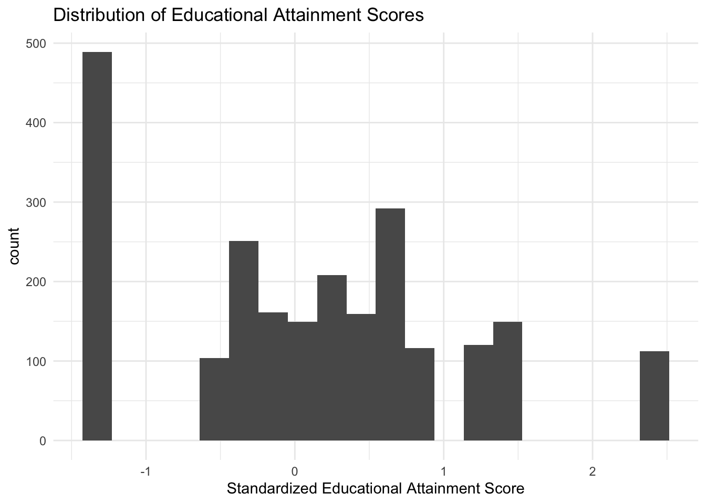
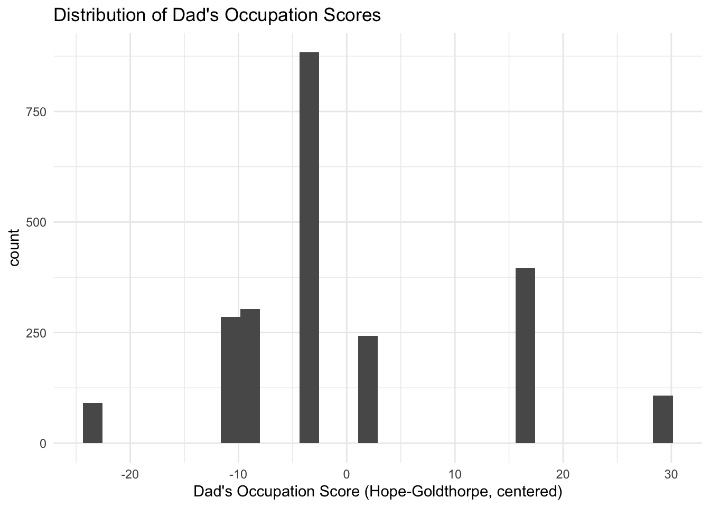
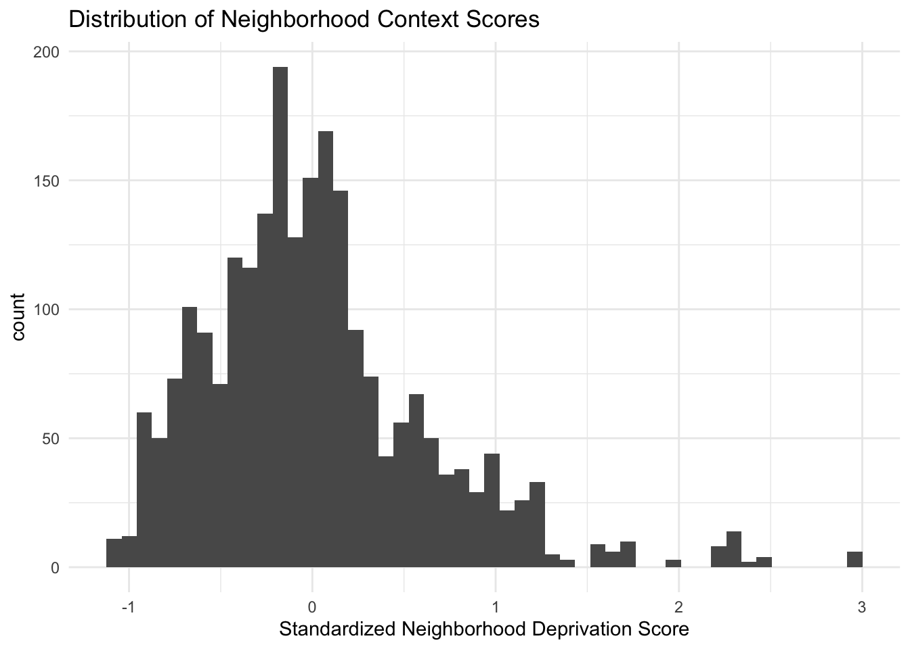
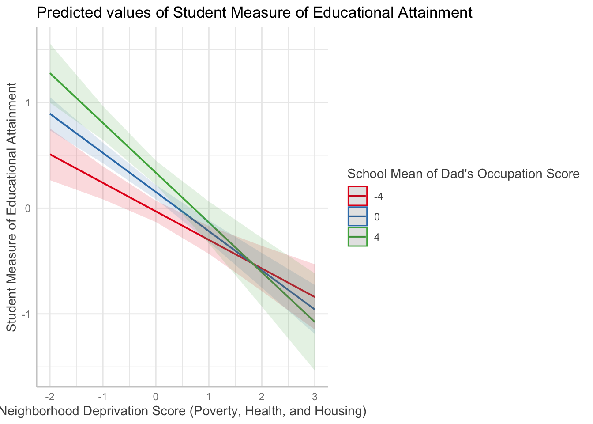

13 Cross-Classified Linear Mixed Models
Data for this chapter: scotland.dta
This week, we will be using George Leckie’s (2009) scotland dataset, which includes 2,310 students, nested within 17 schools and separately nested within 500+ neighborhoods.
Everything so far has assumed a strict hierarchy: each student belongs to one classroom, each classroom to one school, cleanly nested like boxes inside boxes. Real social structures often refuse to cooperate. Students from one neighborhood attend different schools, and each school draws from many neighborhoods. Schools and neighborhoods are crossed, not nested.
13.1 Load in our MVP packages
13.2 Part 1: loading in the data, and then recoding variables
13.2.1 Load in the data
Rows: 2,310
Columns: 11
$ neighid <dbl> 26, 26, 26, 26, 26, 27, 29, 29, 29, 29, 29, 29, 29, 29, 29, 3…
$ schid <dbl> 20, 20, 20, 20, 20, 20, 18, 20, 20, 20, 20, 20, 20, 20, 20, 2…
$ attain <dbl> 1.5177, -1.3276, 0.5610, 1.5177, -1.3276, -0.1325, 0.0293, 0.…
$ p7vrq <dbl> 17.972, -10.028, 2.972, 1.972, -1.028, 3.972, 8.972, -0.028, …
$ p7read <dbl> 17.134, -27.866, 6.134, 11.134, -0.866, -0.866, 6.134, -5.866…
$ dadocc <dbl> 16.196, -3.454, 2.316, -9.094, -3.454, -3.454, 16.196, -3.454…
$ dadunemp <dbl> 0, 0, 0, 0, 0, 0, 0, 0, 0, 0, 0, 0, 0, 0, 0, 0, 0, 0, 0, 0, 0…
$ daded <dbl> 0, 0, 0, 0, 0, 0, 1, 0, 0, 0, 0, 0, 0, 0, 0, 1, 0, 1, 0, 0, 0…
$ momed <dbl> 0, 0, 0, 0, 0, 1, 1, 0, 0, 0, 0, 0, 0, 0, 0, 0, 0, 1, 0, 0, 0…
$ male <dbl> 1, 0, 0, 0, 1, 0, 1, 0, 1, 0, 0, 0, 1, 0, 1, 1, 1, 1, 1, 1, 1…
$ deprive <dbl> -0.551, -0.551, -0.551, -0.551, -0.551, 0.147, -0.083, -0.083…
13.2.2 The describe function from Hmisc is a great codebook
describe(scotland)scotland
11 Variables 2310 Observations
--------------------------------------------------------------------------------
neighid Format:%12.0g
n missing distinct Info Mean pMedian Gmd .05
2310 0 524 1 495.3 489 305.5 61.0
.10 .25 .50 .75 .90 .95
143.9 240.2 530.0 707.0 808.0 861.0
lowest : 26 27 29 30 31, highest: 1092 1095 1096 1097 1098
--------------------------------------------------------------------------------
schid Format:%12.0g
n missing distinct Info Mean pMedian Gmd .05
2310 0 17 0.995 10.01 10 7.174 0
.10 .25 .50 .75 .90 .95
2 5 9 16 19 20
Value 0 1 2 3 5 6 7 8 9 10 13
Frequency 146 22 146 159 155 101 286 112 136 133 92
Proportion 0.063 0.010 0.063 0.069 0.067 0.044 0.124 0.048 0.059 0.058 0.040
Value 15 16 17 18 19 20
Frequency 190 111 154 91 102 174
Proportion 0.082 0.048 0.067 0.039 0.044 0.075
--------------------------------------------------------------------------------
attain Format:%12.0g
n missing distinct Info Mean pMedian Gmd .05
2310 0 14 0.987 0.0934 0.09505 1.124 -1.3276
.10 .25 .50 .75 .90 .95
-1.3276 -0.5812 0.1582 0.7350 1.5177 1.5177
Value -1.3276 -0.5812 -0.3600 -0.1325 0.0293 0.1582 0.2641 0.3917
Frequency 489 104 251 161 149 112 96 159
Proportion 0.212 0.045 0.109 0.070 0.065 0.048 0.042 0.069
Value 0.5610 0.7350 0.9127 1.1405 1.5177 2.4151
Frequency 153 139 116 120 149 112
Proportion 0.066 0.060 0.050 0.052 0.065 0.048
--------------------------------------------------------------------------------
p7vrq Format:%12.0g
n missing distinct Info Mean pMedian Gmd .05
2310 0 68 0.999 0.5058 0.472 11.95 -17.028
.10 .25 .50 .75 .90 .95
-13.028 -7.028 -0.028 7.972 13.972 16.972
lowest : -27.028 -26.028 -25.028 -24.028 -23.028
highest: 35.972 36.972 40.972 41.972 42.972
--------------------------------------------------------------------------------
p7read Format:%12.0g
n missing distinct Info Mean pMedian Gmd .05
2310 0 61 1 -0.04435 0.134 15.8 -23.866
.10 .25 .50 .75 .90 .95
-17.866 -9.866 -0.866 9.134 19.134 24.134
lowest : -31.866 -30.866 -29.866 -28.866 -27.866
highest: 24.134 25.134 26.134 27.134 28.134
--------------------------------------------------------------------------------
dadocc Format:%12.0g
n missing distinct Info Mean pMedian Gmd
2310 0 7 0.933 -0.4642 -3.454 12.33
Value -23.454 -11.494 -9.094 -3.454 2.316 16.196 29.226
Frequency 91 285 303 884 242 397 108
Proportion 0.039 0.123 0.131 0.383 0.105 0.172 0.047
--------------------------------------------------------------------------------
dadunemp Format:%12.0g
n missing distinct Info Sum Mean
2310 0 2 0.292 252 0.1091
--------------------------------------------------------------------------------
daded Format:%12.0g
n missing distinct Info Sum Mean
2310 0 2 0.507 497 0.2152
--------------------------------------------------------------------------------
momed Format:%12.0g
n missing distinct Info Sum Mean
2310 0 2 0.56 574 0.2485
--------------------------------------------------------------------------------
male Format:%12.0g
n missing distinct Info Sum Mean
2310 0 2 0.749 1109 0.4801
--------------------------------------------------------------------------------
deprive Format:%12.0g
n missing distinct Info Mean pMedian Gmd .05
2310 0 458 1 0.02167 -0.0335 0.6664 -0.8250
.10 .25 .50 .75 .90 .95
-0.6930 -0.3970 -0.0620 0.2957 0.8410 1.1400
lowest : -1.082 -1.048 -1.03 -0.983 -0.975, highest: 2.33 2.419 2.438 2.498 2.959
--------------------------------------------------------------------------------13.3 Part one: data exploration and coding/labelling
13.3.1 Start with variable labelling using the label function
label(scotland$neighid)="Neighborhood ID"
label(scotland$schid)="School ID"
label(scotland$attain)="Student Measure of Educational Attainment"
label(scotland$p7vrq)="Primary 7 Verbal Reasoning Quotient"
label(scotland$p7read)="Primary 7 Reading Test Scores"
label(scotland$dadocc)="Dad's Occupation Score on Hope-Goldthorpe Scale (centered)"
label(scotland$dadunemp)="Dad Currently Unemployed"
label(scotland$daded)="Dad School After Age 15"
label(scotland$momed)="Mom School After Age 15"
label(scotland$male)="Male"
label(scotland$deprive)="Neighborhood Deprivation Score (Poverty, Health, and Housing)"Labelling every variable at the start is a small investment that pays off repeatedly. Six months from now, p7vrq will mean nothing to you, and the label will.
Note one variable in particular: dadocc is each student’s own father’s occupation, scored on the Hope-Goldthorpe scale and centered. It is a student-level variable. That matters below, because the dataset has no school-level predictor of its own, so we will build one by aggregating dadocc up to the school, just as we aggregated free lunch status in Chapter 7. Knowing which level a variable lives at is how you avoid modeling an individual characteristic as though it were a group one, or the reverse.
scot.clean <- scotland %>%
mutate(.,
dadunemp.fac = as_factor(dadunemp),
daded.fac = as_factor(daded),
momed.fac = as_factor(momed),
male.fac = as_factor(male))
levels(scot.clean$dadunemp.fac) = c("No","Yes")
levels(scot.clean$daded.fac) = c("No","Yes")
levels(scot.clean$momed.fac) = c("No","Yes")
levels(scot.clean$male.fac) = c("No","Yes")
glimpse(scot.clean)Rows: 2,310
Columns: 15
$ neighid <labelled> 26, 26, 26, 26, 26, 27, 29, 29, 29, 29, 29, 29, 29, …
$ schid <labelled> 20, 20, 20, 20, 20, 20, 18, 20, 20, 20, 20, 20, 20, …
$ attain <labelled> 1.5177, -1.3276, 0.5610, 1.5177, -1.3276, -0.1325, 0…
$ p7vrq <labelled> 17.972, -10.028, 2.972, 1.972, -1.028, 3.972, 8.972,…
$ p7read <labelled> 17.134, -27.866, 6.134, 11.134, -0.866, -0.866, 6.13…
$ dadocc <labelled> 16.196, -3.454, 2.316, -9.094, -3.454, -3.454, 16.19…
$ dadunemp <labelled> 0, 0, 0, 0, 0, 0, 0, 0, 0, 0, 0, 0, 0, 0, 0, 0, 0, 0…
$ daded <labelled> 0, 0, 0, 0, 0, 0, 1, 0, 0, 0, 0, 0, 0, 0, 0, 1, 0, 1…
$ momed <labelled> 0, 0, 0, 0, 0, 1, 1, 0, 0, 0, 0, 0, 0, 0, 0, 0, 0, 1…
$ male <labelled> 1, 0, 0, 0, 1, 0, 1, 0, 1, 0, 0, 0, 1, 0, 1, 1, 1, 1…
$ deprive <labelled> -0.551, -0.551, -0.551, -0.551, -0.551, 0.147, -0.08…
$ dadunemp.fac <fct> No, No, No, No, No, No, No, No, No, No, No, No, No, No, N…
$ daded.fac <fct> No, No, No, No, No, No, Yes, No, No, No, No, No, No, No, …
$ momed.fac <fct> No, No, No, No, No, Yes, Yes, No, No, No, No, No, No, No,…
$ male.fac <fct> Yes, No, No, No, Yes, No, Yes, No, Yes, No, No, No, Yes, …Two steps again: as_factor() converts to a factor, then assigning to levels() renames the categories. The names are applied in the order R already has the levels, so this assumes 0 comes first. Worth verifying with table() on any variable where you are unsure, since reversed labels would silently flip the sign of every associated coefficient.
13.3.2 Data Management Tip of the Week: aggregate a student variable up to the school
[1] 17dadocc_sch is the average father’s occupation score among the students in each school, a measure of the school’s socioeconomic composition. It has exactly one value per school, 17 in all, which is how you can confirm the aggregation worked. Having both versions in the data lets us ask two different questions later: whether a child’s own family background predicts attainment, and whether the background of the other children in their school does too.
describe(scot.clean)scot.clean
16 Variables 2310 Observations
--------------------------------------------------------------------------------
neighid : Neighborhood ID Format:%12.0g
n missing distinct Info Mean pMedian Gmd .05
2310 0 524 1 495.3 489 305.5 61.0
.10 .25 .50 .75 .90 .95
143.9 240.2 530.0 707.0 808.0 861.0
lowest : 26 27 29 30 31, highest: 1092 1095 1096 1097 1098
--------------------------------------------------------------------------------
schid : School ID Format:%12.0g
n missing distinct Info Mean pMedian Gmd .05
2310 0 17 0.995 10.01 10 7.174 0
.10 .25 .50 .75 .90 .95
2 5 9 16 19 20
Value 0 1 2 3 5 6 7 8 9 10 13
Frequency 146 22 146 159 155 101 286 112 136 133 92
Proportion 0.063 0.010 0.063 0.069 0.067 0.044 0.124 0.048 0.059 0.058 0.040
Value 15 16 17 18 19 20
Frequency 190 111 154 91 102 174
Proportion 0.082 0.048 0.067 0.039 0.044 0.075
--------------------------------------------------------------------------------
attain : Student Measure of Educational Attainment Format:%12.0g
n missing distinct Info Mean pMedian Gmd .05
2310 0 14 0.987 0.0934 0.09505 1.124 -1.3276
.10 .25 .50 .75 .90 .95
-1.3276 -0.5812 0.1582 0.7350 1.5177 1.5177
Value -1.3276 -0.5812 -0.3600 -0.1325 0.0293 0.1582 0.2641 0.3917
Frequency 489 104 251 161 149 112 96 159
Proportion 0.212 0.045 0.109 0.070 0.065 0.048 0.042 0.069
Value 0.5610 0.7350 0.9127 1.1405 1.5177 2.4151
Frequency 153 139 116 120 149 112
Proportion 0.066 0.060 0.050 0.052 0.065 0.048
--------------------------------------------------------------------------------
p7vrq : Primary 7 Verbal Reasoning Quotient Format:%12.0g
n missing distinct Info Mean pMedian Gmd .05
2310 0 68 0.999 0.5058 0.472 11.95 -17.028
.10 .25 .50 .75 .90 .95
-13.028 -7.028 -0.028 7.972 13.972 16.972
lowest : -27.028 -26.028 -25.028 -24.028 -23.028
highest: 35.972 36.972 40.972 41.972 42.972
--------------------------------------------------------------------------------
p7read : Primary 7 Reading Test Scores Format:%12.0g
n missing distinct Info Mean pMedian Gmd .05
2310 0 61 1 -0.04435 0.134 15.8 -23.866
.10 .25 .50 .75 .90 .95
-17.866 -9.866 -0.866 9.134 19.134 24.134
lowest : -31.866 -30.866 -29.866 -28.866 -27.866
highest: 24.134 25.134 26.134 27.134 28.134
--------------------------------------------------------------------------------
dadocc : Dad's Occupation Score on Hope-Goldthorpe Scale (centered) Format:%12.0g
n missing distinct Info Mean pMedian Gmd
2310 0 7 0.933 -0.4642 -3.454 12.33
Value -23.454 -11.494 -9.094 -3.454 2.316 16.196 29.226
Frequency 91 285 303 884 242 397 108
Proportion 0.039 0.123 0.131 0.383 0.105 0.172 0.047
--------------------------------------------------------------------------------
dadunemp : Dad Currently Unemployed Format:%12.0g
n missing distinct Info Sum Mean
2310 0 2 0.292 252 0.1091
--------------------------------------------------------------------------------
daded : Dad School After Age 15 Format:%12.0g
n missing distinct Info Sum Mean
2310 0 2 0.507 497 0.2152
--------------------------------------------------------------------------------
momed : Mom School After Age 15 Format:%12.0g
n missing distinct Info Sum Mean
2310 0 2 0.56 574 0.2485
--------------------------------------------------------------------------------
male : Male Format:%12.0g
n missing distinct Info Sum Mean
2310 0 2 0.749 1109 0.4801
--------------------------------------------------------------------------------
deprive : Neighborhood Deprivation Score (Poverty, Health, and Housing) Format:%12.0g
n missing distinct Info Mean pMedian Gmd .05
2310 0 458 1 0.02167 -0.0335 0.6664 -0.8250
.10 .25 .50 .75 .90 .95
-0.6930 -0.3970 -0.0620 0.2957 0.8410 1.1400
lowest : -1.082 -1.048 -1.03 -0.983 -0.975, highest: 2.33 2.419 2.438 2.498 2.959
--------------------------------------------------------------------------------
dadunemp.fac : Dad Currently Unemployed
n missing distinct
2310 0 2
Value No Yes
Frequency 2058 252
Proportion 0.891 0.109
--------------------------------------------------------------------------------
daded.fac : Dad School After Age 15
n missing distinct
2310 0 2
Value No Yes
Frequency 1813 497
Proportion 0.785 0.215
--------------------------------------------------------------------------------
momed.fac : Mom School After Age 15
n missing distinct
2310 0 2
Value No Yes
Frequency 1736 574
Proportion 0.752 0.248
--------------------------------------------------------------------------------
male.fac : Male
n missing distinct
2310 0 2
Value No Yes
Frequency 1201 1109
Proportion 0.52 0.48
--------------------------------------------------------------------------------
dadocc_sch : School Mean of Dad's Occupation Score
n missing distinct Info Mean pMedian Gmd .05
2310 0 17 0.995 -0.4642 -0.5977 2.897 -3.9368
.10 .25 .50 .75 .90 .95
-3.9079 -2.3725 -0.2803 0.6341 2.3005 5.1540
-7.0912729176608 (22, 0.010), -3.93678210910998 (133, 0.058), -3.90790426567809
(146, 0.063), -3.67991970873427 (174, 0.075), -2.37252960836186 (136, 0.059),
-1.68033954075405 (112, 0.048), -1.48185730290103 (154, 0.067),
-1.07230208354926 (159, 0.069), -0.536157014323216 (102, 0.044),
-0.280301574158342 (146, 0.063), -0.123189329027056 (111, 0.048),
0.320265481522036 (286, 0.124), 0.634128807437034 (155, 0.067),
1.76874701007382 (91, 0.039), 2.30047344659504 (190, 0.082), 5.15401945963945
(101, 0.044), 5.74556494277457 (92, 0.040)
--------------------------------------------------------------------------------
13.3.3 Explore our outcome, attain
ggplot(data = scot.clean, mapping = aes(x = attain)) +
geom_histogram(bins = 20) +
labs(title = "Distribution of Educational Attainment Scores",
x = "Standardized Educational Attainment Score") +
theme_minimal()
13.3.4 Explore a few other predictors
ggplot(data = scot.clean, mapping = aes(x = dadocc)) +
geom_histogram(bins = 30) +
labs(title = "Distribution of Dad's Occupation Scores",
x = "Dad's Occupation Score (Hope-Goldthorpe, centered)") +
theme_minimal()
ggplot(data = scot.clean, mapping = aes(x = deprive)) +
geom_histogram(bins = 50) +
labs(title = "Distribution of Neighborhood Context Scores",
x = "Standardized Neighborhood Deprivation Score") +
theme_minimal()
dadocc takes only seven distinct values, one for each occupational category on the Hope-Goldthorpe scale, so its histogram is a set of separated bars rather than a smooth distribution. deprive is different: it is a neighborhood-level variable, so every student in a neighborhood shares the same value. With more than 500 neighborhoods, it looks nearly continuous.
13.4 Part two: modeling
13.4.1 First, run two separate models with school and neighborhood as the L2 clusters
Linear mixed model fit by maximum likelihood . t-tests use Satterthwaite's
method [lmerModLmerTest]
Formula: attain ~ (1 | schid)
Data: scot.clean
AIC BIC logLik -2*log(L) df.resid
6448.2 6465.4 -3221.1 6442.2 2307
Scaled residuals:
Min 1Q Median 3Q Max
-2.12306 -0.70227 0.00178 0.60966 2.81884
Random effects:
Groups Name Variance Std.Dev.
schid (Intercept) 0.08874 0.2979
Residual 0.93441 0.9666
Number of obs: 2310, groups: schid, 17
Fixed effects:
Estimate Std. Error df t value Pr(>|t|)
(Intercept) 0.08227 0.07568 15.46431 1.087 0.29413.4.2 Calculate school ICC
icc.school <- 0.08874/(0.08874 + 0.93441)
icc.school[1] 0.08673215Linear mixed model fit by maximum likelihood . t-tests use Satterthwaite's
method [lmerModLmerTest]
Formula: attain ~ (1 | neighid)
Data: scot.clean
AIC BIC logLik -2*log(L) df.resid
6422.0 6439.2 -3208.0 6416.0 2307
Scaled residuals:
Min 1Q Median 3Q Max
-2.33164 -0.65532 0.01513 0.58177 2.96174
Random effects:
Groups Name Variance Std.Dev.
neighid (Intercept) 0.2015 0.4489
Residual 0.8044 0.8969
Number of obs: 2310, groups: neighid, 524
Fixed effects:
Estimate Std. Error df t value Pr(>|t|)
(Intercept) 0.08202 0.02844 465.72727 2.885 0.0041 **
---
Signif. codes: 0 '***' 0.001 '**' 0.01 '*' 0.05 '.' 0.1 ' ' 113.4.3 Calculate neighborhood ICC
icc.neigh <- 0.2015/(0.2015 + 0.8044)
icc.neigh[1] 0.2003181Fitting each grouping structure alone first is worth doing, because the comparison with the combined model below is where the main lesson of this chapter lives.
13.4.4 Now, a null additive cross-classified model
Linear mixed model fit by maximum likelihood . t-tests use Satterthwaite's
method [lmerModLmerTest]
Formula: attain ~ (1 | schid) + (1 | neighid)
Data: scot.clean
AIC BIC logLik -2*log(L) df.resid
6364.7 6387.7 -3178.4 6356.7 2306
Scaled residuals:
Min 1Q Median 3Q Max
-2.36115 -0.69814 0.01345 0.58371 2.92697
Random effects:
Groups Name Variance Std.Dev.
neighid (Intercept) 0.14122 0.3758
schid (Intercept) 0.07545 0.2747
Residual 0.79902 0.8939
Number of obs: 2310, groups: neighid, 524; schid, 17
Fixed effects:
Estimate Std. Error df t value Pr(>|t|)
(Intercept) 0.07535 0.07222 15.52708 1.043 0.313The syntax is unremarkable, which is part of the point. Two crossed factors are simply two separate random intercept terms joined with +.
Writing (1|schid/neighid) would tell R that neighborhoods are nested within schools, creating a separate random effect for every school-neighborhood combination. That is a different model and, for these data, the wrong one.
The diagnostic question is simple: does every neighborhood send its students to exactly one school? Here the answer is no, which is what makes the structure crossed.
13.4.5 Calculate neighborhood ICC in crossed model
icc.neigh.crossed <- 0.14122/(0.14122 + 0.07545 + 0.79902)
icc.neigh.crossed[1] 0.139038513.4.6 Calculate school ICC in crossed model
icc.school.crossed <- 0.07545/(0.14122 + 0.07545 + 0.79902)
icc.school.crossed[1] 0.07428448Compare these two numbers with the separate-model ICCs above. Both shrink when the two factors are modeled together, and the reason is the central insight of cross-classified modeling.
A single-factor model has nowhere to put the other source of variation. Fit schools alone, and neighborhood differences get absorbed into the school variance, because students in the same school tend to come from overlapping neighborhoods. The school-only model therefore attributes to schools some variation that actually belongs to where children live. Fitting both at once lets each factor account for its own share.
This has direct consequences for school accountability research. A model that ignores neighborhoods will systematically overstate how much schools matter.
Note also the denominator: all three variance components, since the total variance is now split three ways.
13.4.7 Add an L1 predictor, male
Linear mixed model fit by maximum likelihood . t-tests use Satterthwaite's
method [lmerModLmerTest]
Formula: attain ~ male.fac + (1 | schid) + (1 | neighid)
Data: scot.clean
AIC BIC logLik -2*log(L) df.resid
6360.6 6389.3 -3175.3 6350.6 2305
Scaled residuals:
Min 1Q Median 3Q Max
-2.41396 -0.69992 0.00977 0.58312 2.97855
Random effects:
Groups Name Variance Std.Dev.
neighid (Intercept) 0.14113 0.3757
schid (Intercept) 0.07439 0.2727
Residual 0.79681 0.8926
Number of obs: 2310, groups: neighid, 524; schid, 17
Fixed effects:
Estimate Std. Error df t value Pr(>|t|)
(Intercept) 0.12206 0.07421 17.70449 1.645 0.1176
male.facYes -0.09656 0.03898 2189.19030 -2.477 0.0133 *
---
Signif. codes: 0 '***' 0.001 '**' 0.01 '*' 0.05 '.' 0.1 ' ' 1
Correlation of Fixed Effects:
(Intr)
male.facYes -0.254
13.4.8 L1 plus school-level predictor only (dadocc_sch)
Linear mixed model fit by maximum likelihood . t-tests use Satterthwaite's
method [lmerModLmerTest]
Formula: attain ~ male.fac + dadocc_sch + (1 | schid) + (1 | neighid)
Data: scot.clean
AIC BIC logLik -2*log(L) df.resid
6334.0 6368.4 -3161.0 6322.0 2304
Scaled residuals:
Min 1Q Median 3Q Max
-2.57398 -0.68565 0.01563 0.58822 2.97543
Random effects:
Groups Name Variance Std.Dev.
neighid (Intercept) 0.134963 0.36737
schid (Intercept) 0.006021 0.07759
Residual 0.799946 0.89440
Number of obs: 2310, groups: neighid, 524; schid, 17
Fixed effects:
Estimate Std. Error df t value Pr(>|t|)
(Intercept) 0.16810 0.03765 30.44869 4.465 0.000102 ***
male.facYes -0.09384 0.03896 2197.51688 -2.408 0.016101 *
dadocc_sch 0.08810 0.01113 19.93703 7.918 1.4e-07 ***
---
Signif. codes: 0 '***' 0.001 '**' 0.01 '*' 0.05 '.' 0.1 ' ' 1
Correlation of Fixed Effects:
(Intr) ml.fcY
male.facYes -0.496
dadocc_sch 0.113 0.028Watch the school variance here rather than the neighborhood variance. A school-level predictor should explain between-school differences, so that is where the movement belongs. And it does: the school variance falls from about .074 in model.1 to about .006, while the neighborhood variance barely moves. School composition accounts for nearly all of the between-school differences in attainment.
13.4.9 L1 plus neighborhood-level predictors only (deprive)
Linear mixed model fit by maximum likelihood . t-tests use Satterthwaite's
method [lmerModLmerTest]
Formula: attain ~ male.fac + deprive + (1 | schid) + (1 | neighid)
Data: scot.clean
AIC BIC logLik -2*log(L) df.resid
6238.1 6272.5 -3113.0 6226.1 2304
Scaled residuals:
Min 1Q Median 3Q Max
-2.4480 -0.6746 0.0031 0.5900 3.5529
Random effects:
Groups Name Variance Std.Dev.
neighid (Intercept) 0.06053 0.2460
schid (Intercept) 0.03840 0.1960
Residual 0.80436 0.8969
Number of obs: 2310, groups: neighid, 524; schid, 17
Fixed effects:
Estimate Std. Error df t value Pr(>|t|)
(Intercept) 0.14566 0.05638 17.35109 2.584 0.0191 *
male.facYes -0.10269 0.03843 2245.81027 -2.672 0.0076 **
deprive -0.46836 0.03820 411.09976 -12.260 <2e-16 ***
---
Signif. codes: 0 '***' 0.001 '**' 0.01 '*' 0.05 '.' 0.1 ' ' 1
Correlation of Fixed Effects:
(Intr) ml.fcY
male.facYes -0.329
deprive -0.023 0.009And now the mirror image: a neighborhood-level predictor should move the neighborhood variance, and it does, falling from about .141 to .061. The school variance drops too, from .074 to .038. That is a reminder that the two factors are crossed rather than independent: schools that draw from more deprived neighborhoods have lower averages partly because of those neighborhoods. Fitting these two separately makes it easy to see which component each predictor is accounting for.
On the deprivation coefficient, a word of caution that applies well beyond these data. Families are not randomly assigned to neighborhoods, and families in more deprived areas differ from others in many ways, some measured here and most not. The coefficient describes an association. It does not establish that moving a child to a less deprived neighborhood would raise their attainment.
13.4.10 L1 plus both school and neighborhood predictors, and the student-level version of dadocc
Linear mixed model fit by maximum likelihood . t-tests use Satterthwaite's
method [lmerModLmerTest]
Formula: attain ~ male.fac + deprive + dadocc + dadocc_sch + (1 | schid) +
(1 | neighid)
Data: scot.clean
AIC BIC logLik -2*log(L) df.resid
6042.4 6088.4 -3013.2 6026.4 2302
Scaled residuals:
Min 1Q Median 3Q Max
-2.6792 -0.6750 0.0095 0.6060 3.5265
Random effects:
Groups Name Variance Std.Dev.
neighid (Intercept) 0.030276 0.17400
schid (Intercept) 0.007045 0.08394
Residual 0.763505 0.87379
Number of obs: 2310, groups: neighid, 524; schid, 17
Fixed effects:
Estimate Std. Error df t value Pr(>|t|)
(Intercept) 1.770e-01 3.446e-02 2.951e+01 5.138 1.65e-05 ***
male.facYes -9.530e-02 3.706e-02 2.278e+03 -2.572 0.010180 *
deprive -3.473e-01 3.547e-02 4.199e+02 -9.791 < 2e-16 ***
dadocc 2.289e-02 1.664e-03 2.274e+03 13.756 < 2e-16 ***
dadocc_sch 4.720e-02 1.060e-02 2.327e+01 4.453 0.000178 ***
---
Signif. codes: 0 '***' 0.001 '**' 0.01 '*' 0.05 '.' 0.1 ' ' 1
Correlation of Fixed Effects:
(Intr) ml.fcY depriv dadocc
male.facYes -0.514
deprive -0.006 0.013
dadocc -0.003 0.009 0.210
dadocc_sch 0.110 0.032 0.192 -0.107With both dadocc and dadocc_sch in the model, the two coefficients answer different questions. The dadocc coefficient compares two children in the same school whose fathers’ occupations differ. The dadocc_sch coefficient compares two children with the same family background who attend schools with different compositions. Both are positive and significant, so a child’s attainment is associated with their own family’s background and, over and above that, with the background of their schoolmates. This is the same individual-versus-aggregate logic as TSIG and GTSIG in Chapters 4 and 5.
13.4.11 Test random effects for male.fac at neighborhood level and at school level
Linear mixed model fit by maximum likelihood . t-tests use Satterthwaite's
method [lmerModLmerTest]
Formula: attain ~ male.fac + deprive + dadocc + dadocc_sch + (male.fac |
schid) + (male.fac | neighid)
Data: scot.clean
AIC BIC logLik -2*log(L) df.resid
6048.5 6117.5 -3012.3 6024.5 2298
Scaled residuals:
Min 1Q Median 3Q Max
-2.6816 -0.6614 0.0067 0.6116 3.5267
Random effects:
Groups Name Variance Std.Dev. Corr
neighid (Intercept) 0.034456 0.18562
male.facYes 0.009622 0.09809 -0.32
schid (Intercept) 0.014332 0.11971
male.facYes 0.008607 0.09277 -0.83
Residual 0.758177 0.87073
Number of obs: 2310, groups: neighid, 524; schid, 17
Fixed effects:
Estimate Std. Error df t value Pr(>|t|)
(Intercept) 1.766e-01 4.070e-02 1.502e+01 4.339 0.000583 ***
male.facYes -9.346e-02 4.414e-02 1.409e+01 -2.117 0.052516 .
deprive -3.454e-01 3.553e-02 4.206e+02 -9.722 < 2e-16 ***
dadocc 2.290e-02 1.663e-03 2.272e+03 13.769 < 2e-16 ***
dadocc_sch 4.766e-02 1.054e-02 2.454e+01 4.521 0.000134 ***
---
Signif. codes: 0 '***' 0.001 '**' 0.01 '*' 0.05 '.' 0.1 ' ' 1
Correlation of Fixed Effects:
(Intr) ml.fcY depriv dadocc
male.facYes -0.698
deprive -0.007 0.015
dadocc -0.006 0.012 0.211
dadocc_sch 0.095 0.032 0.195 -0.106ranova(model.5)ANOVA-like table for random-effects: Single term deletions
Model:
attain ~ male.fac + deprive + dadocc + dadocc_sch + (male.fac | schid) + (male.fac | neighid)
npar logLik AIC LRT Df Pr(>Chisq)
<none> 12 -3012.3 6048.5
male.fac in (male.fac | schid) 10 -3013.1 6046.2 1.67753 2 0.4322
male.fac in (male.fac | neighid) 10 -3012.3 6044.6 0.05532 2 0.9727This asks whether the gender gap in attainment differs across schools, across neighborhoods, or both. ranova() tests each random slope separately, so the two can come out differently. Here neither comes close (p = .43 for schools, p = .97 for neighborhoods), and both versions have higher AIC than the model without them. The gender gap looks about the same everywhere.
Expect trouble with models like this, and read it as information. Estimating a slope variance across 17 schools is asking a great deal of very little data, so a convergence warning, a singular fit, or a boundary estimate would not be surprising. The neighborhood version rests on far more units and is on firmer ground.
13.4.12 Finally, test a model with school-neighborhood interaction
Linear mixed model fit by maximum likelihood . t-tests use Satterthwaite's
method [lmerModLmerTest]
Formula:
attain ~ male.fac + deprive + dadocc + dadocc_sch + deprive:dadocc_sch +
(1 | schid) + (1 | neighid)
Data: scot.clean
AIC BIC logLik -2*log(L) df.resid
6040.5 6092.2 -3011.3 6022.5 2301
Scaled residuals:
Min 1Q Median 3Q Max
-2.7553 -0.6836 0.0166 0.6037 3.6021
Random effects:
Groups Name Variance Std.Dev.
neighid (Intercept) 0.027931 0.16712
schid (Intercept) 0.006885 0.08298
Residual 0.764197 0.87418
Number of obs: 2310, groups: neighid, 524; schid, 17
Fixed effects:
Estimate Std. Error df t value Pr(>|t|)
(Intercept) 1.631e-01 3.496e-02 3.202e+01 4.667 5.22e-05 ***
male.facYes -9.550e-02 3.704e-02 2.280e+03 -2.579 0.009984 **
deprive -3.703e-01 3.710e-02 4.707e+02 -9.981 < 2e-16 ***
dadocc 2.264e-02 1.669e-03 2.279e+03 13.569 < 2e-16 ***
dadocc_sch 4.570e-02 1.055e-02 2.374e+01 4.333 0.000231 ***
deprive:dadocc_sch -2.508e-02 1.268e-02 5.574e+02 -1.978 0.048456 *
---
Signif. codes: 0 '***' 0.001 '**' 0.01 '*' 0.05 '.' 0.1 ' ' 1
Correlation of Fixed Effects:
(Intr) ml.fcY depriv dadocc ddcc_s
male.facYes -0.506
deprive 0.059 0.013
dadocc 0.015 0.010 0.227
dadocc_sch 0.122 0.033 0.204 -0.101
dprv:ddcc_s 0.204 0.003 0.312 0.087 0.069This interaction is unusual and worth stating carefully. It crosses a neighborhood-level variable with a school-level variable, asking whether the effect of neighborhood deprivation depends on the socioeconomic composition of the school a child attends. Does attending a more advantaged school buffer the association between a deprived neighborhood and attainment? That is a genuinely interesting policy question, and it is only askable in a cross-classified framework.
The interaction is significant, but only just (b = −.025, p = .048), and the school half of it rests on 17 schools. Treat it as suggestive.
13.4.13 Use ggeffects to visualize the interaction between deprive and dadocc_sch
Interpreting a significant cross-level interaction from a coefficient alone is hard, especially one that crosses two different level-2 variables. The ggeffects package turns the model into predicted attainment scores you can plot directly.

Read this the same way you would read the predicted-value plots elsewhere in this book: the vertical axis is predicted attain, not a coefficient, and each line traces predicted attainment across deprive at one fixed level of dadocc_sch. The values −4, 0, and 4 are a low-, average-, and high-composition school; most of the 17 schools fall between them. If the three lines were parallel, the deprivation-attainment relationship would not depend on school composition, and the buffering hypothesis would be off the table either way.
That is not what happens here, but the pattern is not the buffering story either. At low deprivation, school composition matters: at a deprivation score of −1, close to the least-deprived neighborhoods in the data, a child has a predicted attainment of about 0.8 in a high-composition school and about 0.2 in a low-composition one. (ggpredict() extends the lines to −2 for a round axis, a little beyond the data.) Toward the more deprived neighborhoods that gap closes. The lines meet at a deprivation score of about 2, and from there on the confidence bands overlap almost completely. In other words, a more advantaged school’s benefit is concentrated among children who are already from less-deprived neighborhoods; it does little to offset the disadvantage facing children from the most deprived ones. That is closer to a differential-benefit pattern than a buffering one, and it is worth sitting with rather than assuming the more comfortable story.
Two cautions keep this in proportion. The interaction is only marginally significant, and very few students live in the most deprived neighborhoods (fewer than 2% have deprive above 2), so the right-hand side of the plot is where the model has the least data.
13.5 Comparing the models
library(modelsummary)
library(broom.mixed)
models <- list(model.null.neigh, model.null.school, model.null.crossed, model.1, model.2, model.3, model.4, model.5, model.6)
modelsummary(models, output = "markdown")| (Intercept) | 0.082 | 0.082 | 0.075 | 0.122 | 0.168 | 0.146 | 0.177 | 0.177 | 0.163 |
| (0.028) | (0.076) | (0.072) | (0.074) | (0.038) | (0.056) | (0.034) | (0.041) | (0.035) | |
| male.facYes | -0.097 | -0.094 | -0.103 | -0.095 | -0.093 | -0.095 | |||
| (0.039) | (0.039) | (0.038) | (0.037) | (0.044) | (0.037) | ||||
| dadocc_sch | 0.088 | 0.047 | 0.048 | 0.046 | |||||
| (0.011) | (0.011) | (0.011) | (0.011) | ||||||
| deprive | -0.468 | -0.347 | -0.345 | -0.370 | |||||
| (0.038) | (0.035) | (0.036) | (0.037) | ||||||
| dadocc | 0.023 | 0.023 | 0.023 | ||||||
| (0.002) | (0.002) | (0.002) | |||||||
| deprive × dadocc_sch | -0.025 | ||||||||
| (0.013) | |||||||||
| SD (Observations) | 0.897 | 0.967 | 0.894 | 0.893 | 0.894 | 0.897 | 0.874 | 0.871 | 0.874 |
| SD (Intercept neighid) | 0.449 | 0.376 | 0.376 | 0.367 | 0.246 | 0.174 | 0.186 | 0.167 | |
| SD (male.facYes neighid) | 0.098 | ||||||||
| Cor (Intercept~male.facYes neighid) | -0.317 | ||||||||
| SD (Intercept schid) | 0.298 | 0.275 | 0.273 | 0.078 | 0.196 | 0.084 | 0.120 | 0.083 | |
| SD (male.facYes schid) | 0.093 | ||||||||
| Cor (Intercept~male.facYes schid) | -0.829 | ||||||||
| Num.Obs. | 2310 | 2310 | 2310 | 2310 | 2310 | 2310 | 2310 | 2310 | 2310 |
| R2 Marg. | 0.000 | 0.000 | 0.000 | 0.002 | 0.057 | 0.088 | 0.202 | 0.202 | 0.204 |
| R2 Cond. | 0.200 | 0.087 | 0.213 | 0.215 | 0.199 | 0.188 | 0.240 | 0.245 | 0.239 |
| AIC | 6427.3 | 6451.5 | 6368.1 | 6368.7 | 6350.8 | 6251.5 | 6075.6 | 6081.4 | 6080.6 |
| BIC | 6444.5 | 6468.7 | 6391.1 | 6397.4 | 6385.3 | 6285.9 | 6121.5 | 6150.3 | 6132.3 |
| ICC | 0.2 | 0.1 | 0.2 | 0.2 | 0.1 | 0.1 | 0.0 | 0.1 | 0.0 |
| RMSE | 0.85 | 0.96 | 0.85 | 0.85 | 0.85 | 0.87 | 0.86 | 0.85 | 0.86 |
13.6 A caution about 17 schools
With only 17 schools, the school-level variance is estimated from very little information. Variance components need a reasonable number of higher-level units to be estimated precisely, and common rules of thumb want at least 30 to 50. The neighborhood variance, resting on 500-plus units, is on much firmer ground.
This asymmetry should shape how you write up the results. Report both variances, but attach appropriate uncertainty to claims about schools. A school-level variance that appears smaller than the neighborhood variance may reflect a genuine difference, or it may reflect that 17 units cannot pin down a variance with much precision.
13.7 Recognizing this structure elsewhere
Cross-classification is more common than it looks once you start watching for it. Students crossed with teachers across multiple years. Patients crossed with hospitals and with surgeons who operate at several hospitals. Employees crossed with firms and with occupations. Survey respondents crossed with interviewers and with geographic areas.
The diagnostic question is simple. Does every unit in group A belong to exactly one unit in group B? If yes, the structure is nested. If units in A spread across multiple units in B, it is crossed, and modeling it as nested will misattribute variance between the two.
13.8 A note on your content review
Your Module 11 content review uses these same Scotland data, but with primary 7 reading scores (p7read) as the outcome and a different set of student-level predictors. The steps are the same: separate and combined null models, a comparison of how the variance components shift, then predictors at the student, school, and neighborhood levels. You will need to build dadocc_sch yourself, exactly as above. What changes is the substance of the question, not the code.